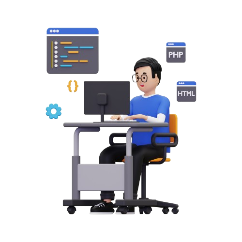
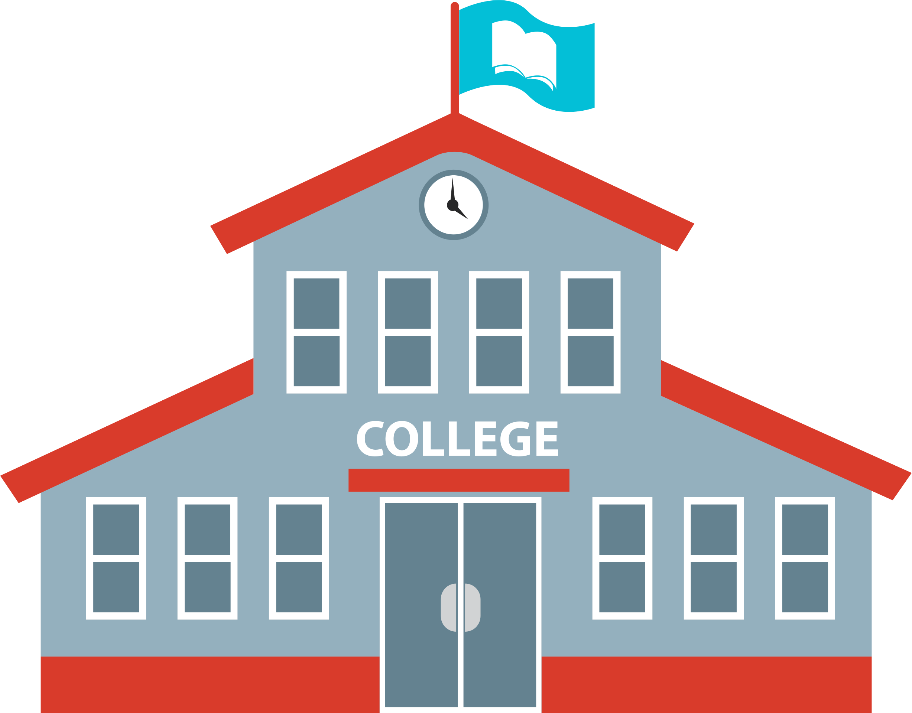

Hi, My name is Hemendra & i am a learner. I am
passionate
about software
developement, android app developement and game developement

My Learning Journey
Schooling(2011-2023)

Higher Secondary(2023-25)
During my 11th & 12th I have mastered double-entry bookkeeping, corporate balance sheets, and
management theories
in Accountancy and Business Studies—I backed them up with the sharp analytical rigor of
Mathematics and the technical problem-solving of Information Technology. My high school years
were spent solving structured problems from every angle, balancing ledger books one period,
solving calculus equations the next, and writing code or querying databases by the end of the
day. This combination gave me a unique perspective.
Capcut
Driven by a passion for modern digital storytelling, I taught myself to master CapCut, turning
short-form video editing from a creative hobby into a sharp technical skill. I went beyond basic
cuts and filters to master advanced editing workflows—animating precise motion with keyframes,
crafting seamless speed ramps, syncing visual cuts directly to audio beats, and designing
dynamic text overlays. Through hands-on practice, I developed a sharp eye for visual pacing and
retention hooks, learning how to structure content that keeps viewers engaged from the first
second. Combining this creative editor's mindset with my background in IT and Business gives me
a unique advantage: I don't just understand digital platforms from a technical or strategic
perspective—I know how to directly produce compelling, high-quality visual content for them.
Graduation(2025-)
During my 1st and 2nd of Bachelor of Computer Applications (BCA), I immersed myself
in building a rigorous technical foundation across software
development, systems administration, and data management. I transitioned from introductory logic
in C++ and object-oriented programming in Java and C++ to writing clean, versatile code in
Python.
Mastering Data Structures and Algorithms (DSA) trained me to evaluate efficiency and structure
complex problem-solving, while diving into Database Management Systems (DBMS) gave me hands-on
experience structuring, managing, and querying data using SQL. Alongside backend logic, I
explored full-stack fundamentals through Web Development and gained command over the Linux
terminal, shell environments, and system-level operations. Balancing these foundational computer
science disciplines alongside my ongoing focus on cybersecurity and hands-on security labs
allowed me to connect theoretical concepts directly to real-world system architecture, data
flow, and modern digital security.
Adobe Photoshop
Driven by a strong creative instinct and a need for precise visual communication, I taught
myself to master Adobe Photoshop as a core part of my digital design toolkit. I moved far beyond
simple retouching to master complex, layer-based design workflows—combining precise selections,
non-destructive masking, advanced blend modes, and targeted color grading to transform raw ideas
into polished visual assets. Learning Photoshop taught me to think critically about spatial
composition, visual hierarchy, lighting, and asset management, ensuring that every project was
both aesthetically striking and technical in execution. Blending this graphic design mastery
with my technical background in web development and video editing gives me complete control over
visual media—allowing me to design UI components, craft high-impact marketing visuals, and
control every detail of the user’s visual experience.